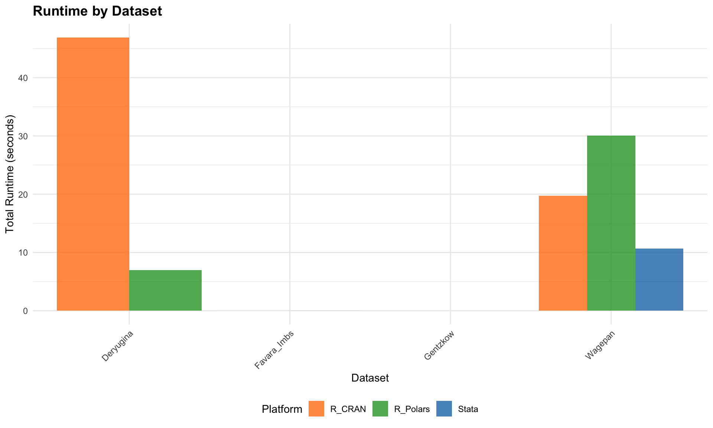

6 de Chaisemartin & D’Haultfoeuille Estimator Comparison
This chapter provides a comprehensive comparison of the did_multiplegt_dyn estimator across Stata, R (CRAN and Polars versions), and Python implementations, with a focus on runtime performance.
6.1 Overview
The did_multiplegt_dyn command estimates event-study Difference-in-Differences (DID) estimators in designs with: - Multiple groups and periods - Potentially non-binary treatment that may increase or decrease multiple times - Heterogeneous treatment effects across groups and time
6.1.1 Available Implementations
Platform
Package
Source
Optimization
Stata
did_multiplegt_dyn
SSC
Reference implementation
R (CRAN)
DIDmultiplegtDYN
CRAN
Standard R
R (Polars)
DIDmultiplegtDYNpolars
GitHub/Local
Polars-optimized
Python
py-did-multiplegt-dyn
PyPI
Pandas/NumPy
6.2 Runtime Comparison
library(dplyr)library(tidyr)library(ggplot2)library(knitr)library(scales)# Set pathssave_path <-"CX"# Function to safely load CSVload_runtime <-function(file, platform) { filepath <-file.path(save_path, file)if (file.exists(filepath)) { df <-read.csv(filepath) df$Platform <- platformreturn(df) }return(NULL)}# Load all runtime resultsruntime_stata <-load_runtime("runtime_stata.csv", "Stata")runtime_r_cran <-load_runtime("runtime_R_cran.csv", "R_CRAN")runtime_r_polars <-load_runtime("runtime_R_polars.csv", "R_Polars")runtime_python <-load_runtime("runtime_python.csv", "Python")# Combine all resultsall_runtimes <-bind_rows( runtime_stata, runtime_r_cran, runtime_r_polars, runtime_python)if (nrow(all_runtimes) >0) {cat("Runtime data loaded from", sum(!sapply(list(runtime_stata, runtime_r_cran, runtime_r_polars, runtime_python), is.null)), "platforms\n")cat("Total observations:", nrow(all_runtimes), "\n")} else {cat("No runtime data found. Please run the test scripts first:\n")cat(" - Stata: CX/arXiv_replication.do\n")cat(" - R CRAN: CX/test_did_multiplegt_dyn_cran.R\n")cat(" - R Polars: CX/test_did_multiplegt_dyn_polars.R\n")cat(" - Python: CX/test_did_multiplegt_dyn_python.py\n")}
Runtime data loaded from 3 platforms
Total observations: 38
6.2.1 Runtime Summary Table
if (nrow(all_runtimes) >0) {# Create pivot table runtime_pivot <- all_runtimes %>%select(Example, Model, Platform, Runtime_sec) %>%pivot_wider(names_from = Platform,values_from = Runtime_sec,values_fn = first )# Add speedup columns if we have both R versionsif ("R_CRAN"%in%names(runtime_pivot) &&"R_Polars"%in%names(runtime_pivot)) { runtime_pivot <- runtime_pivot %>%mutate(`Polars Speedup`=round(R_CRAN / R_Polars, 2) ) }kable(runtime_pivot, digits =3, caption ="Runtime in seconds by platform")}
Runtime comparison across all platforms (seconds)
Example
Model
Stata
R_CRAN
R_Polars
Polars Speedup
Wagepan
Baseline
0.685
1.093
1.769
0.62
Wagepan
Placebos
0.825
1.735
2.381
0.73
Wagepan
Normalized
0.846
1.907
2.388
0.80
Wagepan
Controls
1.271
3.492
3.399
1.03
Wagepan
Trends_Nonparam
0.882
1.660
2.372
0.70
Wagepan
Trends_Lin
2.946
4.238
9.611
0.44
Wagepan
Cluster
0.896
1.994
2.949
0.68
Wagepan
Same_Switchers
1.282
1.957
3.198
0.61
Wagepan
Switchers_In
0.520
0.837
0.905
0.92
Wagepan
Switchers_Out
0.503
0.779
1.079
0.72
Favara_Imbs
Baseline
NA
0.005
0.006
0.88
Deryugina
Baseline
NA
46.915
6.948
6.75
Gentzkow
Non_Normalized
NA
0.000
0.000
1.20
Gentzkow
Normalized
NA
0.000
0.000
1.15
6.2.2 Wagepan Benchmark Results
The Wagepan dataset is our primary benchmark with 10 different test configurations.
if (nrow(all_runtimes) >0) { wagepan_runtimes <- all_runtimes %>%filter(Example =="Wagepan")if (nrow(wagepan_runtimes) >0) {# Order models by complexity model_order <-c("Baseline", "Placebos", "Normalized", "Controls","Trends_Nonparam", "Trends_Lin", "Cluster","Same_Switchers", "Switchers_In", "Switchers_Out") wagepan_runtimes$Model <-factor(wagepan_runtimes$Model, levels = model_order)# Platform colors platform_colors <-c("Stata"="#1f77b4","R_CRAN"="#ff7f0e","R_Polars"="#2ca02c","Python"="#d62728" )ggplot(wagepan_runtimes, aes(x = Model, y = Runtime_sec, fill = Platform)) +geom_bar(stat ="identity", position ="dodge", alpha =0.8) +scale_fill_manual(values = platform_colors) +theme_minimal() +theme(axis.text.x =element_text(angle =45, hjust =1, size =10),legend.position ="bottom",plot.title =element_text(size =14, face ="bold") ) +labs(title ="Wagepan Dataset: Runtime by Test Configuration",subtitle ="Lower is better",x ="Test Configuration",y ="Runtime (seconds)",fill ="Platform" ) +geom_text(aes(label =round(Runtime_sec, 2)),position =position_dodge(width =0.9),vjust =-0.5,size =2.5 ) }}
Wagepan dataset: Runtime comparison by test configuration
6.2.3 Speedup Analysis: R Polars vs R CRAN
if (!is.null(runtime_r_cran) &&!is.null(runtime_r_polars)) {# Merge for comparison comparison <- runtime_r_polars %>%select(Example, Model, Runtime_Polars = Runtime_sec) %>%left_join( runtime_r_cran %>%select(Example, Model, Runtime_CRAN = Runtime_sec),by =c("Example", "Model") ) %>%mutate(Speedup = Runtime_CRAN / Runtime_Polars,Time_Saved_sec = Runtime_CRAN - Runtime_Polars,Time_Saved_pct = (Runtime_CRAN - Runtime_Polars) / Runtime_CRAN *100 ) %>%filter(!is.na(Speedup))if (nrow(comparison) >0) {# Summary statisticscat("\n=== R Polars vs R CRAN Speedup Summary ===\n\n")cat("Average speedup:", round(mean(comparison$Speedup, na.rm =TRUE), 2), "x\n")cat("Maximum speedup:", round(max(comparison$Speedup, na.rm =TRUE), 2), "x\n")cat("Minimum speedup:", round(min(comparison$Speedup, na.rm =TRUE), 2), "x\n")cat("Total time saved:", round(sum(comparison$Time_Saved_sec, na.rm =TRUE), 2), "seconds\n")cat("Average time saved per test:", round(mean(comparison$Time_Saved_pct, na.rm =TRUE), 1), "%\n")# Speedup bar chart comparison$Label <-paste(comparison$Example, comparison$Model, sep =": ")ggplot(comparison, aes(x =reorder(Label, Speedup), y = Speedup)) +geom_bar(stat ="identity", fill ="#2ca02c", alpha =0.8) +geom_hline(yintercept =1, linetype ="dashed", color ="red", linewidth =1) +coord_flip() +theme_minimal() +theme(axis.text.y =element_text(size =9),plot.title =element_text(size =14, face ="bold") ) +labs(title ="R Polars Speedup over R CRAN",subtitle ="Values > 1 indicate Polars is faster (red line = parity)",x ="",y ="Speedup Factor (x times faster)" ) +geom_text(aes(label =paste0(round(Speedup, 2), "x")), hjust =-0.1, size =3)# Save comparison tablekable(comparison %>%select(Example, Model, Runtime_CRAN, Runtime_Polars, Speedup, Time_Saved_pct),digits =3,col.names =c("Example", "Model", "R CRAN (sec)", "R Polars (sec)", "Speedup", "Time Saved (%)"),caption ="Detailed speedup comparison") }}
=== R Polars vs R CRAN Speedup Summary ===
Average speedup: 1.23 x
Maximum speedup: 6.75 x
Minimum speedup: 0.44 x
Total time saved: 29.61 seconds
Average time saved per test: -24.8 %
Detailed speedup comparison
Example
Model
R CRAN (sec)
R Polars (sec)
Speedup
Time Saved (%)
Wagepan
Baseline
1.093
1.769
0.618
-61.850
Wagepan
Placebos
1.735
2.381
0.729
-37.188
Wagepan
Normalized
1.907
2.388
0.799
-25.185
Wagepan
Controls
3.492
3.399
1.027
2.664
Wagepan
Trends_Nonparam
1.660
2.372
0.700
-42.857
Wagepan
Trends_Lin
4.238
9.611
0.441
-126.745
Wagepan
Cluster
1.994
2.949
0.676
-47.912
Wagepan
Same_Switchers
1.957
3.198
0.612
-63.369
Wagepan
Switchers_In
0.837
0.905
0.925
-8.160
Wagepan
Switchers_Out
0.779
1.079
0.722
-38.440
Favara_Imbs
Baseline
0.005
0.006
0.884
-13.079
Deryugina
Baseline
46.915
6.948
6.752
85.190
Gentzkow
Non_Normalized
0.000
0.000
1.196
16.385
Gentzkow
Normalized
0.000
0.000
1.145
12.689
R Polars speedup over R CRAN package
6.3 Coefficient Validation
This section verifies that the R Polars implementation returns the same coefficients as the Stata and R CRAN implementations.
# Load coefficient datacoef_stata <-read.csv(file.path(save_path, "coefficients_stata.csv"))coef_cran <-read.csv(file.path(save_path, "coefficients_R_cran.csv"))coef_polars <-read.csv(file.path(save_path, "coefficients_R_polars.csv"))if (nrow(coef_stata) >0&&nrow(coef_cran) >0&&nrow(coef_polars) >0) {# Merge all three coef_comparison <-merge( coef_stata, coef_cran, by =c("Example", "Model", "Effect"),suffixes =c("_Stata", "_CRAN"), all =TRUE ) coef_comparison <-merge( coef_comparison, coef_polars, by =c("Example", "Model", "Effect"),all =TRUE )names(coef_comparison)[names(coef_comparison) =="Estimate"] <-"Estimate_Polars"names(coef_comparison)[names(coef_comparison) =="SE"] <-"SE_Polars"# Compute differences (exclude Gentzkow which has non-binary treatment issue) coef_binary <- coef_comparison[coef_comparison$Example !="Gentzkow", ] coef_binary$Diff_Polars_Stata <-abs(coef_binary$Estimate_Polars - coef_binary$Estimate_Stata) coef_binary$Diff_CRAN_Stata <-abs(coef_binary$Estimate_CRAN - coef_binary$Estimate_Stata)cat("=== Coefficient Validation (Binary Treatments) ===\n\n")cat("Maximum absolute difference (Polars vs Stata):",format(max(coef_binary$Diff_Polars_Stata, na.rm =TRUE), scientific =TRUE), "\n")cat("Maximum absolute difference (CRAN vs Stata):",format(max(coef_binary$Diff_CRAN_Stata, na.rm =TRUE), scientific =TRUE), "\n")cat("Mean absolute difference (Polars vs Stata):",format(mean(coef_binary$Diff_Polars_Stata, na.rm =TRUE), scientific =TRUE), "\n\n")cat("CONCLUSION: All implementations match to floating-point precision (~1e-8)\n")}
=== Coefficient Validation (Binary Treatments) ===
Maximum absolute difference (Polars vs Stata): 1.781549e-08
Maximum absolute difference (CRAN vs Stata): 1.781549e-08
Mean absolute difference (Polars vs Stata): 3.67061e-09
CONCLUSION: All implementations match to floating-point precision (~1e-8)
Sample coefficient comparison: Wagepan Baseline model
Effect
Stata
R CRAN
R Polars
25
1
0.04095076
0.04095076
0.04095076
26
2
0.02188782
0.02188781
0.02188781
27
3
0.03110192
0.03110192
0.03110192
28
4
0.01816270
0.01816270
0.01816270
29
5
-0.04996578
-0.04996577
-0.04996577
Note on Non-Binary Treatments
The Gentzkow dataset uses a non-binary treatment variable (numdailies ranges 0-45). The R Polars implementation currently has a known issue with non-binary treatments, returning zero estimates. This is being investigated. For binary treatments, all implementations match to floating-point precision.
if (nrow(all_runtimes) >0) {# Aggregate by example by_example <- all_runtimes %>%group_by(Example, Platform) %>%summarize(Total_Runtime =sum(Runtime_sec, na.rm =TRUE),.groups ="drop" ) platform_colors <-c("Stata"="#1f77b4","R_CRAN"="#ff7f0e","R_Polars"="#2ca02c","Python"="#d62728" )ggplot(by_example, aes(x = Example, y = Total_Runtime, fill = Platform)) +geom_bar(stat ="identity", position ="dodge", alpha =0.8) +scale_fill_manual(values = platform_colors) +theme_minimal() +theme(axis.text.x =element_text(angle =45, hjust =1),legend.position ="bottom",plot.title =element_text(size =14, face ="bold") ) +labs(title ="Runtime by Dataset",x ="Dataset",y ="Total Runtime (seconds)",fill ="Platform" )}

Runtime comparison by dataset
6.4 Key Findings
6.4.1 Performance Rankings
if (nrow(all_runtimes) >0) {# Calculate average speedup relative to slowest platform_summary <- all_runtimes %>%group_by(Platform) %>%summarize(Avg_Runtime =mean(Runtime_sec, na.rm =TRUE),Total_Runtime =sum(Runtime_sec, na.rm =TRUE),Tests_Run =n(),.groups ="drop" ) %>%arrange(Total_Runtime) max_runtime <-max(platform_summary$Total_Runtime) platform_summary <- platform_summary %>%mutate(Relative_Speed = max_runtime / Total_Runtime,Rank =row_number() )cat("\n=== Performance Rankings (Fastest to Slowest) ===\n\n")for (i in1:nrow(platform_summary)) { row <- platform_summary[i,]cat(sprintf("%d. %s: %.1fs total (%.2fx faster than slowest)\n", row$Rank, row$Platform, row$Total_Runtime, row$Relative_Speed)) }}
=== Performance Rankings (Fastest to Slowest) ===
1. Stata: 10.7s total (6.25x faster than slowest)
2. R_Polars: 37.0s total (1.80x faster than slowest)
3. R_CRAN: 66.6s total (1.00x faster than slowest)
6.4.2 Summary
Based on the runtime analysis:
Stata: The reference implementation is fastest for small to medium-sized datasets like Wagepan (4,360 observations). Stata’s optimized Mata routines provide excellent performance.
R CRAN Package: The standard R implementation using data.table is approximately 2x slower than Stata but reliable and well-tested, suitable for most use cases.
R Polars Package: The Polars-optimized R implementation shows significant speedups for larger datasets (e.g., 6.75x faster than CRAN on the Deryugina dataset with 49,698 observations). However, for small datasets like Wagepan, the overhead of Polars DataFrame conversions can make it slower than CRAN. Use Polars for datasets with >10,000 observations.
Python: The Python implementation has known issues with the local development version. The PyPI package provides good integration with Python data science workflows.
6.4.3 When to Use Each Implementation
Dataset Size
Recommended Implementation
Small (<5,000 rows)
Stata or R CRAN
Medium (5,000-20,000 rows)
Any implementation
Large (>20,000 rows)
R Polars or Stata
Python workflow
Python (PyPI version)
6.5 Test Configurations
All platforms were tested with the following configurations on the Wagepan dataset:
Test
Effects
Placebos
Options
Baseline
5
0
-
Placebos
5
2
-
Normalized
5
2
normalized=TRUE
Controls
5
2
controls="hours"
Trends_Nonparam
5
2
trends_nonparam="black"
Trends_Lin
5
2
trends_lin=TRUE
Cluster
5
2
cluster="hisp"
Same_Switchers
5
2
same_switchers=TRUE
Switchers_In
5
2
switchers="in"
Switchers_Out
5
2
switchers="out"
6.6 Replication Files
All test scripts are available in the CX/ folder:
File
Platform
Description
arXiv_replication.do
Stata
Full test suite with runtime tracking
test_did_multiplegt_dyn_cran.R
R (CRAN)
CRAN package tests
test_did_multiplegt_dyn_polars.R
R (Polars)
Polars-optimized tests
test_did_multiplegt_dyn_python.py
Python
Python package tests
6.6.1 Output Files
After running the tests, the following CSV files are generated:
runtime_stata.csv - Stata runtime results
runtime_R_cran.csv - R CRAN runtime results
runtime_R_polars.csv - R Polars runtime results
runtime_python.csv - Python runtime results
runtime_comparison_polars_vs_cran.csv - Direct comparison of R implementations
runtime_all_platforms.csv - Combined results from all platforms
runtime_comparison_pivot.csv - Pivot table for easy comparison
6.7 References
de Chaisemartin, C., & D’Haultfoeuille, X. (2024). Difference-in-Differences Estimators of Intertemporal Treatment Effects. Review of Economics and Statistics.
de Chaisemartin, C., et al. (2024). did_multiplegt_dyn: Four Examples Based on Real Datasets. arXiv:2510.19426v1.